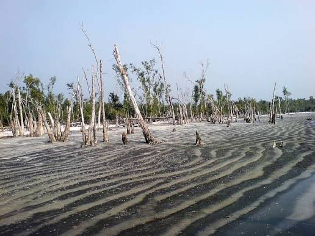
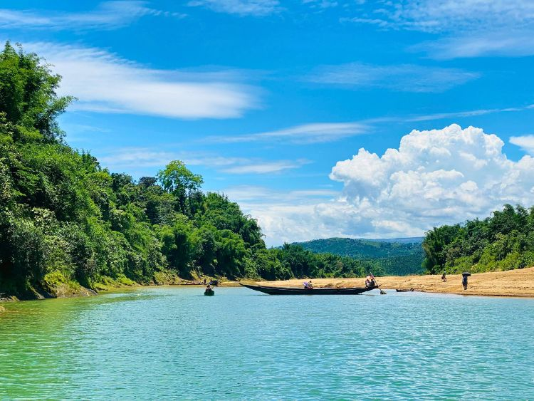
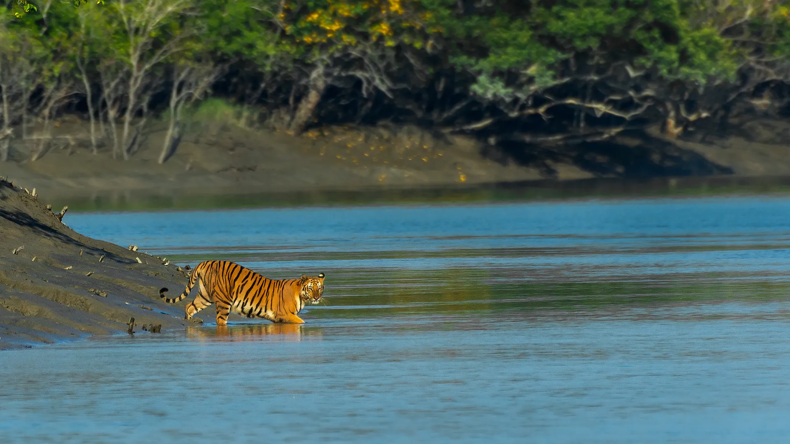
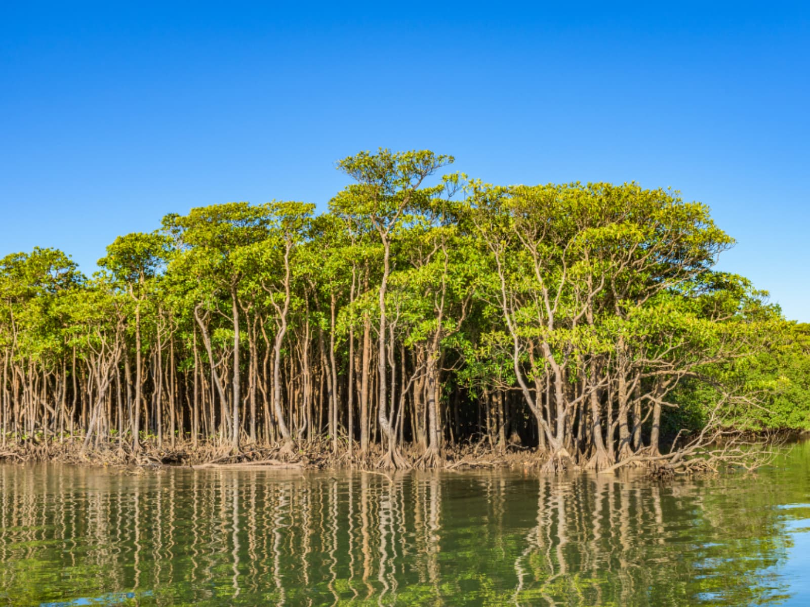

スンダルバンス
シュンドルボンは、バングラデシュの南西部にある世界で有名なマングローブの森です。ユネスコの世界いさんにも登録されています。この森には、ベンガルトラ、シカ、ワニ、いろいろな鳥などが住んでいます。大きな川や緑の木々があり、しぜんがとてもゆたかな場所です。ボートに乗って美しい森や川のけしきを楽しむことができます。しぜんや動物が好きな人におすすめのかんこうスポットです。
Explore Now
シュンドルボンは、バングラデシュの南西部にある世界で有名なマングローブの森です。ユネスコの世界いさんにも登録されています。この森には、ベンガルトラ、シカ、ワニ、いろいろな鳥などが住んでいます。大きな川や緑の木々があり、しぜんがとてもゆたかな場所です。ボートに乗って美しい森や川のけしきを楽しむことができます。しぜんや動物が好きな人におすすめのかんこうスポットです。
Explore Now
ゴールデンディアは、バングラデシュのシュンドルボンに住んでいる美しいシカです。茶色の体に白いはん点があり、とてもかわいい動物です。このシカは、森の中で草や木の葉を食べて生活しています。シュンドルボンでは、川の近くや緑の森の中で見ることができます。しぜんや動物が好きな人にとって、とてもみりょくてきな動物です。

カトカビーチは、バングラデシュのシュンドルボンに位置する美しいビーチです。青い海と広い砂浜があり、多くの観光客を魅了しています。特に夕日の景色が美しく、家族や友達とリラックスした時間を過ごせる人気の観光スポットです。

カラムジャルは、バングラデシュのシュンドルボンに位置する美しい島です。白い砂浜、青い海、豊かな自然が特徴です。特に夕日の景色が美しく、多くの観光客を魅了しています。自然の中で散歩や写真撮影を楽しみ、家族や友達とリラックスした時間を過ごせる人気の観光スポットです。

ヒロンポイントは、バングラデシュのシュンドルボンに位置する美しい海岸です。青い海と広い砂浜があり、多くの観光客を魅了しています。特に夕日の景色が美しく、家族や友達とリラックスした時間を過ごせる人気の観光スポットです。

ドゥブラル・チャルは、バングラデシュのシュンドルボンにある美しい島です。青い海、広いすなはま、緑の森があり、しぜんがとてもゆたかな場所です。この島は、魚をとる人たちやラシュ・メラというお祭りで有名です。とくに朝日や夕日のけしきがとてもきれいです。海を見たり、しゃしんをとったり、しぜんを楽しんだりすることができます。かんこうきゃくに人気のある場所です。

世界最大のマングローブ森林で、自然がとても豊かです。